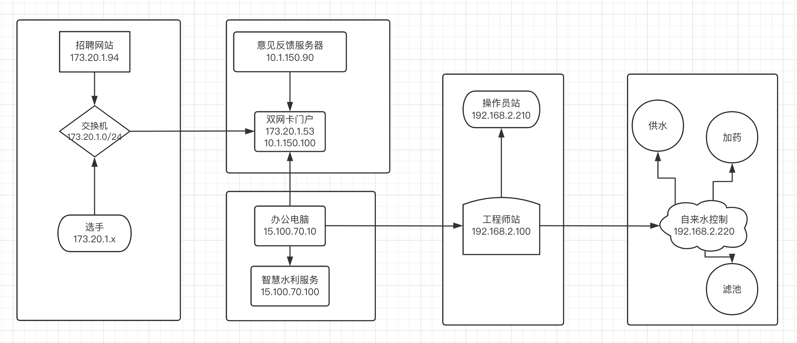
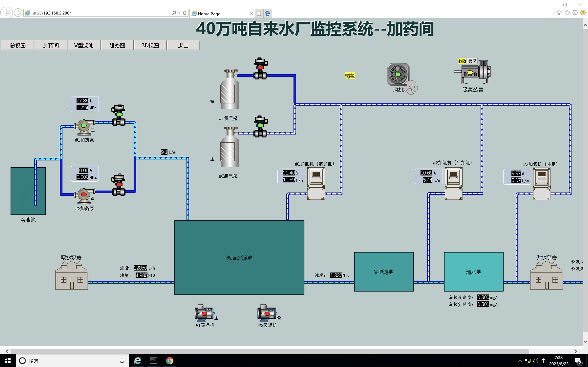
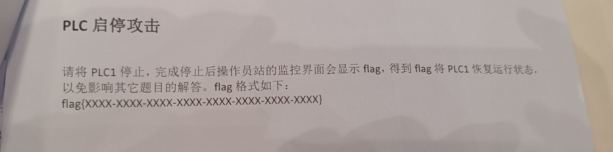

2023 巅峰极客决赛 SU WriteUp
本次巅峰极客决赛为线下渗透赛，我们 SU 取得了 2nd🥈的成绩，感谢队里师傅们的辛苦付出！同时我们也在持续招人，只要你拥有一颗热爱 CTF 的心，都可以加入我们！欢迎发送个人简介至：suers_xctf@126.com
以下是我们 SU 本次 巅峰极客 2023 决赛的 writeup。
本次巅峰极客决赛为线下渗透赛，我们 SU 取得了 2nd🥈的成绩，感谢队里师傅们的辛苦付出！同时我们也在持续招人，只要你拥有一颗热爱 CTF 的心，都可以加入我们！欢迎发送个人简介至：suers_xctf@126.com
以下是我们 SU 本次 巅峰极客 2023 决赛的 writeup。
赛制描述
本次比赛一共8小时，上午10点到下午6点，多层网络渗透赛，其中包含了一些工控的点，工控和渗透比重五五开，不过大多都是打渗透拿分。比赛中不允许选手联网，但是有联网区4根网线可以上网下资料，由于赛中不需要交wp，本wp是感觉回忆描述而来，如有偏差，多多包涵。
网络拓扑
本次比赛没有提供网络拓扑，需要自己攻击一步步推理，但是比赛的中途给了一个题目“比赛中可以根据大屏幕上的拓扑图推测逻辑”，但是屏幕又远又花，而且图很抽象。
所以根据实际情况我们画了一张自己感觉上的图(事后根据回忆画的，有些差异)

1、招聘网站173.20.1.94
因为开场题目只给了这个ip，所以大家都在打这个，这个招聘网站是直接打的drupal远程代码执行 (CVE-2018-7600),在vulhub上有直接的exp
1 | POST /user/register?element_parents=account/mail/%23value&ajax_form=1&_wrapper_format=drupal_ajax HTTP/1.1 |
拿下后，本来想尝试拿这台服务器搭建代理，或者提权等，大概过了1小时，发了公告1、招聘网站只是一个签到，不需要深入利用，然后开始扫描173.20.1.x/24
2、门户网站 173.20.1.53
这就很奇怪了，主办方没给公告之前扫了很多次没东西，发了公告后直接扫描到了这个网站，而且给了phpinfo，phpinfo提供了php版本是 5.4.45,存在phpstudy的后门漏洞，poc直接打。
1 | GET / HTTP/1.1 |
这个是windows写马挺怪的，花了一些时间上去，发现是高权限用户，命令执行增加用户
1 | net user dddd123 dddqwe@!@# /add |
然后使用猕猴桃可以抓admin到密码，同时存在wireshark软件
3、办公电脑 15.100.70.10
主办方多次暗示，这个办公电脑会使用浏览器也访问门户。这题应该是最恶心的一个点。
因为拿下来门户，可以直接挂黑页水坑攻击，我们在173.20.1.53上挂一个恶意js，让办公电脑访问到rce。
首先我们使用门户网站上的wireshark软件抓到办公电脑访问的流量，其中看到了头部带有的ua，显示是89.0.4389.114。
刚好是2021年爆出来的chrome 0day rce版本。
中途大概就两三个队打了，主办方考虑到大家没啥环境，就给了cs4.2版本。最良心的是把exp也给了，再到最后直接给了word说明文档
1 | <script> |
这里生成的shellcode本来是被火绒杀的了，但是比赛到一半主办方说基于很多人没做出来，就挨个把火绒关闭了，hhh。基本上大家都能通过这个直接上线了。
4、智慧水利服务 15.100.70.100
这一台就有点恶心了上面有4个web题，4个flag。但是因为只有办公电脑通他。我们本地和门户均不通，所以代理这一块就很蛋疼，其实只要代理到了本地就不是很难了。
分别是
1、80端口 discuz 7.2的rce
2、8080端口 禅道cnvd_2020_121325
3、3030端口 traggo 这玩意到了后台 不知道怎么打
4、8443端口的ofbiz 反序列化
这里比较恶心的是禅道其实是后台洞，需要打了discuz然后根目录下拿到flag，flag文件后面留了禅道管理员的密码
5、工程师站192.168.2.100
在办公电脑上浏览器打开了192的一个网站，猜测存在192段的地址。然后扫描直接扫到了192.168.2.100存在永恒之蓝，正要去网上下资料的时候，主办方提供了一下“永恒之蓝利用工具”，他真的，我哭死，直接打了上192.168.2.100，
6、操作员站192.168.2.210
楠哥在上面玩工控的时候发现了一个账号密码信息
Operator Station’s
IP:192.168.2.210
User:monitor
Password:nTwn3q3^ph71A
这个是操作员站的密码，猜测是rdp的，就直接上了，然后用猕猴桃读密码rdp，管理员桌面存在一个flag和几个软件。
7、工控 192.168.2.200
在210和110上都有一些工控相关的内容，比如210的管理员账号的浏览器默认打开了192.168.2.200

至此渗透相关的应该都打了，其实漏洞都不是很难，主要是代理太多很难受。接下来按照题目的描述是在210上存在wireshark软件，使用wireshark抓210和220的通讯流量分析制定的题目。


工控wp待续….
2023 巅峰极客决赛 SU WriteUp